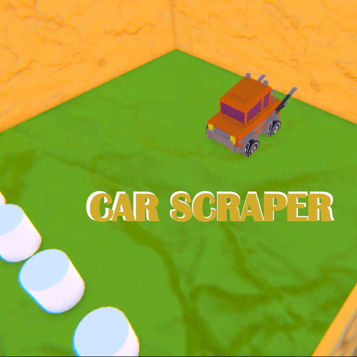
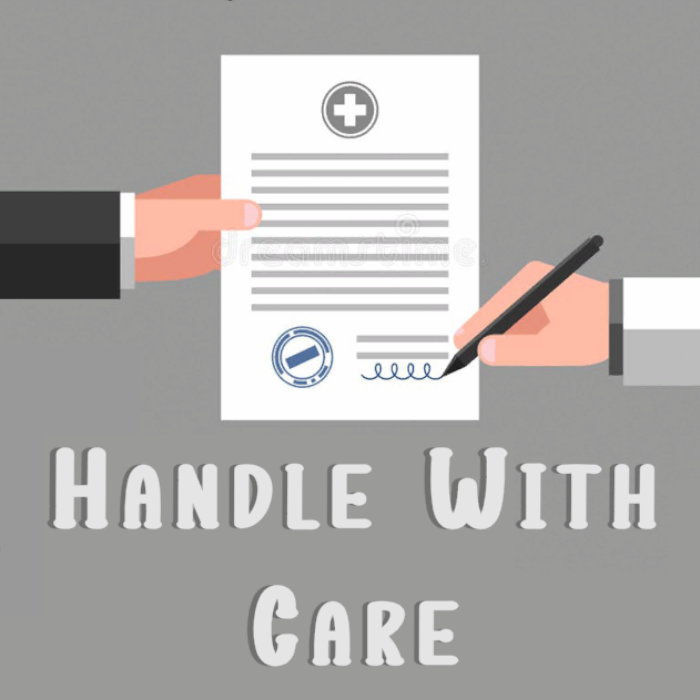
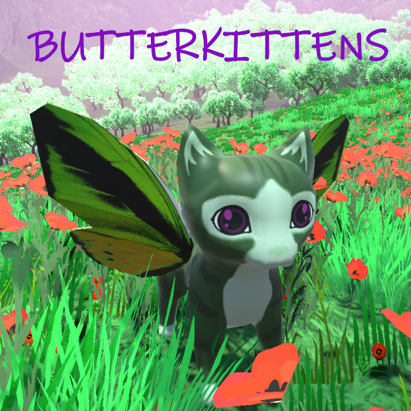
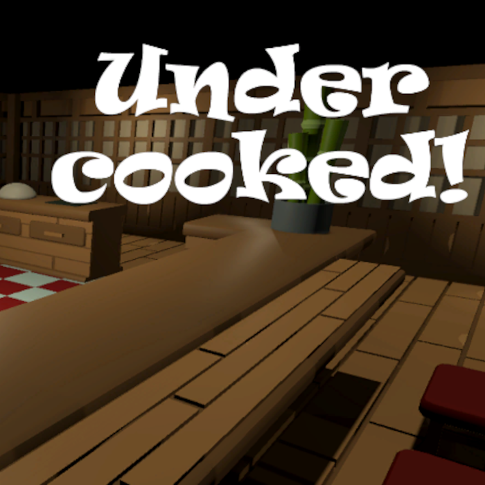
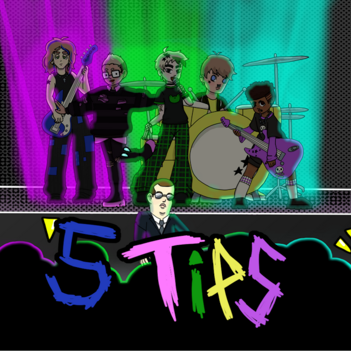

An archive of all of the projects worked on for IGME-603: Gameplay and Prototyping. Note that only Handle with Care has a clickable link, as the other projects' team members haven't explicitly consented to having their projects in this class made public.
A racing/platformer hybrid made in Unity, and the first of the IGME-603 projects. The project's restrictions were that it needed to be a platformer of some kind, and that the project needs controller support. Your car has slippery controls, and the track has sharp turns and enemies that shoot at you. However, your car also has a rope that can both latch onto tether points to make steering easier, as well attach to some objects to fling them at those enemies. My primary contribution was the creation of the tether mechanic, implementing both of its functionalities and ensuring that it was compatible with both the keyboard/mouse and controllers.

A resource management game made in Unity, and the second of the IGME-603 projects. The project's restriction was that it needed to be a serious game, having some message or call to action behind it. You play as a hospital worker, choosing to accept or deny peoples' acceptance into the hospital based on the rules that day. Some people may die if you deny them, but your pay is docked for every incompatible patient that you let in. You can only do such under the restrictive health care system, but maybe you can save a few lives while saving up money for your daughter's surgery? I was in charge of the popup system, which allows for objects on the table to show their details when clicked on, and also made the pause menu.

A photography game made in Unity, and the third of the IGME-603 projects. The project's restrictions were that it needed to have multiple interdependant systems that interact with each other, and that economic systems weren't allowed. You're on a remote island, with your main goal being to take photos of elusive "butterkittens", named as such because they resemble kittens with butterfly wings, and that their nests look like pads of butter. There's no timer, so you can take your time getting the best pictures that you can! My contributions to the project were the weather system, where rain randomly starts and stops based on that day's chance of rain, and the snapshot data, which stores information about a photo and its subjects to calculate the picture's score.

A cooking/resource management game made in Unity, and the fourth of the IGME-603 projects. The project's restriction was that there needed to be an emulation of an ethical monetization system, where players could pay money to gain an advantage, though there couldn't be a notable power difference between spenders and non-spenders. You play as a chef, and have to buy ingredients to make specific food items to sell to customers. However, you're on a strict time limit - customers will only wait for so long for their food before they leave unsatisfied, and if you run out of ingredients before the day ends, you have to buy more during your shift. I was in charge of the monetization and microtransaction systems, allowing players to "pay" a one-time fee to gain permanent access to an additional vendor, which sells a secret ingredient. This ingredient can be added to any dish to boost its sell value, but players don't need it to do well in the game.

A real-time strategy game made in Unity, and the last of the IGME-603 projects. The project's restriction was that there needed to be some RPG-like elements, including a party of multiple playable characters and a way to customize their playstyles. Each run is divided into three phases, each with different gameplay styles. The pre-show phase has you control the titular 5TIPS band and their manager as you complete various tasks, where your manager's equipped items improves the efficiency of specific tasks. The show phase starts with a rhythm game section where the score and the game's difficulty depend on each band member's equipped instruments, and ends with a shorter RTS section with just the manager. Lastly, the post-show phase has you directing each of the band members to specific parts of a bar, and the player is scored based on how closely they matched the band members' preferences. I was in charge of the items as a whole - I created their underlying framework, their unlock criteria (which also serves as the game's progression), and the data tracking system which tracks what items were given to each person for a given run.
